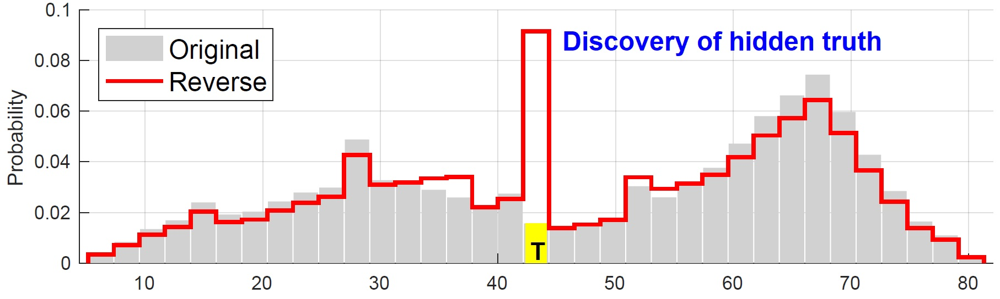
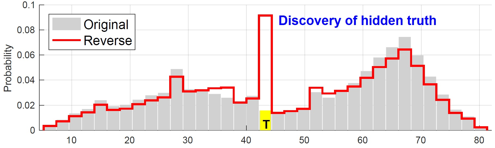
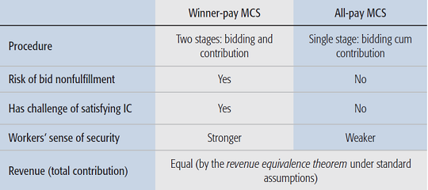
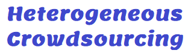
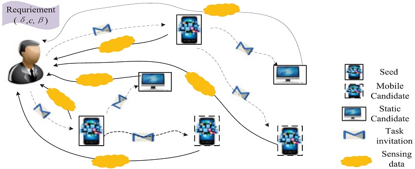
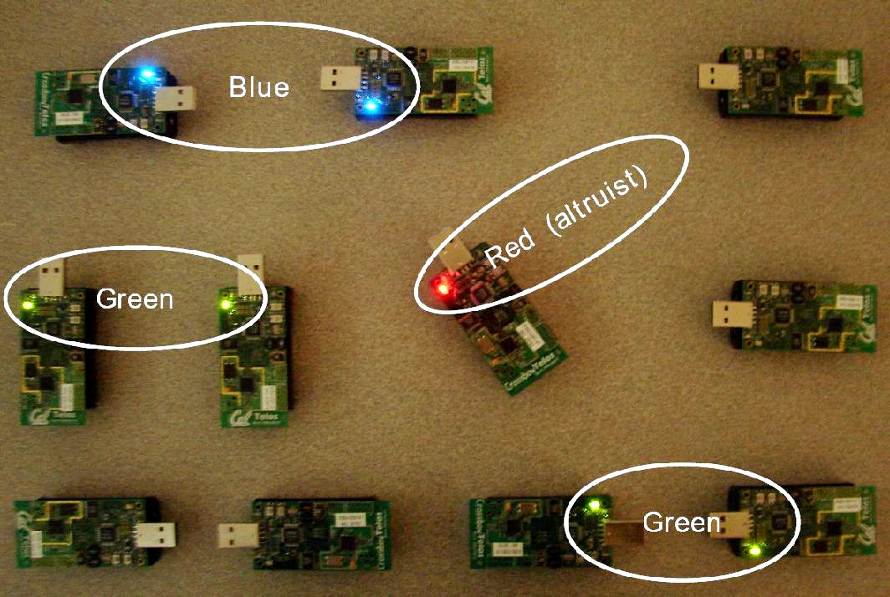

- [TOPS'20] CrowdPrivacy: Publish More Useful Data with Less Privacy Exposure in Crowdsourced Location-based Services [DOI: 10.1145/3375752]
F-J. Wu and T. Luo
ACM Transactions on Privacy and Security (TOPS), Feb 2020.
- [TCS'20] Hardness of and Approximate Mechanism Design for the Bike Rebalancing Problem [DOI: 10.1016/j.tcs.2019.07.030]
H. Lv, F. Wu, T. Luo, X. Gao and G. Chen
Theoretical Computer Science (TCS), vol. 803, pp. 105-115, Jan 2020.
- [IoT-J'19] Improving IoT data quality in mobile crowd sensing: A cross validation approach [DOI: 10.1109/JIOT.2019.2904704]
T. Luo, J. Huang, S. S. Kanhere, J. Zhang, and S. K. Das
IEEE Internet of Things Journal (IoT-J), vol. 6, no. 3, pp. 5651-5664, June 2019.
 

We propose a cross validation (CV) approach which seeks a validating crowd to ratify the contributing crowd in terms of the quality of sensor data contributed by the latter. Using a WRoS technique and a PATOP2 algorithm which makes an exploration-exploitation tradeoff, the CV approach offers a unified solution to two typical yet disparate needs: reinforce obscure truth and discover hidden truth.
- [TMC'19] On designing distributed auction mechanisms for wireless spectrum allocation [DOI: 10.1109/TMC.2018.2869863]
S. Yang, D. Peng, T. Meng, F. Wu, G. Chen, S. Tang, Z. Li, and T. Luo
IEEE Transactions on Mobile Computing (TMC), vol. 18, no. 9., pp. 2129-2146, September 2019.
- [ComMag'17] Sustainable incentives for mobile crowdsensing: Auctions, lotteries, and trust and reputation systems [DOI: 10.1109/MCOM.2017.1600746CM]
T. Luo, S. S. Kanhere, J. Huang, S. K. Das, and F. Wu
IEEE Communications Magazine, vol. 55, no. 3, pp. 68-74, March 2017.

This survey paper provides a technical overview and analysis of six incentive mechanism design frameworks: auction, lottery, trust and reputation system, bargaining game, contract theory, and market-driven mechanism.
- [TIST'16] ACM Lib [Incentive mechanism design for crowdsourcing: an all-pay auction approach] [DOI: 10.1145/2837029]
T. Luo, S. K. Das, H-P. Tan, and L. Xia
ACM Transactions on Intelligent Systems and Technology (TIST), vol. 7, no. 3, pp. 35:1-26, February 2016.
 (table from ComMag'17)
The most common auctions used in incentive mechanism design are winner-pay auctions, where only winners (i.e., highest bidders who will receive reward) need to pay for their bids (by money or effort). In contrast, all-pay auctions require every bidder to pay regardless of who wins, which sounds rather unreasonable. However, we show that applying all-pay auctions to crowdsourcing makes perfect sense and gains several advantages over winner-pay auctions. (This paper is a substantial extension of our INFOCOM'14 paper.)
- [TMC'16] Incentive mechanism design for heterogeneous crowdsourcing using all-pay contests [DOI: 10.1109/TMC.2015.2485978]
T. Luo, S. S. Kanhere, S. K. Das, and H-P. Tan
IEEE Transactions on Mobile Computing (TMC), vol. 15, no. 9, pp. 2234-2246, September 2016.
  (see model illustration)
(see model illustration)
Despite that crowdworkers are typically heterogeneous (in terms of "types" such as abilities, costs, etc.), the daunting challenge of modeling and analyzing it has restricted researchers to homogeneous models in which all the worker types follow a single, common distribution (Bayesian belief). This paper addresses this challenge using an asymmetric all-pay auction model with a prize tuple. In addition, a most interesting Strategy Autonomy (SA) phenomenon is discovered.
- [TMC'16] Competition-based participant recruitment for delay-sensitive crowdsourcing applications in D2D networks [DOI: 10.1109/TMC.2016.2524590]
Y. Han, T. Luo, D. Li, and H. Wu
IEEE Transactions on Mobile Computing (TMC), vol. 15, no. 12, pp. 2987-2999, December 2016.
 A participant-recruit-participant scheme in device-to-device networks.
- [Syst'16] Cooperative Multichannel Directional Medium Access Control for Ad Hoc Networks [DOI: 10.1109/JSYST.2015.2478801]
Y. Wang, M. Motani, H. K. Garg, Q. Chen, and T. Luo
IEEE Systems Journal, 2016.
- Cloud-Enhanced Robotic System for Smart City Crowd Control [html]
A. Rahman, J. Jin, A. Cricenti, A. Rahman, M. Palaniswami, and T. Luo
Journal of Sensor and Actuator Networks, vol. 5, no. 4, pp. 1-26, December 2016.
- [TMC'15] Quality of contributed service and market equilibrium for participatory sensing [DOI: 10.1109/TMC.2014.2330302]
C-K. Tham and T. Luo
IEEE Transactions on Mobile Computing (TMC), vol. 14, no. 4, pp. 829-842, April 2015.
To characterize QoS for crowdsensing, this work proposes a metric called Quality of Contributed Service (QCS) which aggregates individual qualities of contribution as well as takes into account quanlity of information and time sensitivity. This metric QCS is analyzed using a market based supply-and-demand model.
- [COMNET'14] Fairness and social welfare in service allocation schemes for participatory sensing [DOI: 10.1016/j.comnet.2014.07.013]
C-K. Tham and T. Luo
Computer Networks, Elsevier, vol. 73, pp. 58-71, November 2014.
- [SMC'13] Sensing-Driven Energy Purchasing in Smart Grid Cyber-Physical System
C-K. Tham and T. Luo
IEEE Transactions on Systems, Man, and Cybernetics: Systems (SMC), vol. 43, no. 4, pp. 773-784, July 2013.
We design an optimizer and decision maker for each household to optimize their electricity purchase from the main grid. It takes sensing data as input and uses multi-stage stochastic programming as well as linear programming to perform the optimization.
- [CommLett'12] Sensor OpenFlow: Enabling Software-Defined Wireless Sensor Networks
T. Luo, H-P. Tan, and T. Q. S. Quek
IEEE Communications Letters, vol. 16, no. 11, pp. 1896-1899, November 2012.
This work rerepresents the first effort of applying software-defined networking (SDN) to wireless sensor networks, by proposing a SD-WSN architecture with a Sensor OpenFlow (SOF) protocol.
- [TMC'12] Energy-Efficient Strategies for Cooperative Multi-Channel MAC Protocols [Bib]
T. Luo, M. Motani, and V. Srinivasan
IEEE Transactions on Mobile Computing (TMC), vol. 11, no. 4, pp. 553-566, April 2012.
 An altruist node (red) intervenes to prevent packet collision (implemented on TelosB).
(This paper is a substantial extension of our MobiCom'07 paper.)
- [TMC'10] A Metric for DISH Networks: Analysis, Implications, and Applications [Bib]
T. Luo, V. Srinivasan, and M. Motani
IEEE Transactions on Mobile Computing (TMC), vol. 9, no. 3, pp. 376-389, March 2010.
This paper gives an example of how to analyze cooperative networking procotols. The key idea is to introduce a metric called pco, which is the availability of cooperation or more specifically the probability of obtaining cooperation. We then provide an analysis of pco in both single-hop and multi-hop networks.
- [TMC'09] Cooperative Asynchronous Multichannel MAC: Design, Analysis, and Implementation [Bib]
T. Luo, M. Motani, and V. Srinivasan
IEEE Transactions on Mobile Computing (TMC). Vol. 8, no. 3, pp. 338-352, March 2009.
Remark: The proposed protocol (CAM-MAC) was subsequently implemented by Shashi R. Singh on a mesh network testbed demonstrated at MobiCom'10 (program). The detailed report can be found here (WiNTECH program).
- [Globecom'20] Coordinated Container Migration and Base Station Handover in Mobile Edge Computing
M.V. Ngo, T. Luo, H.T. Hoang, and T. Quek
IEEE Global Communications Conference (GLOBECOM), December 2020.
- [KDD'20] Man-in-the-Middle Attacks on MQTT-based IoT Using BERT based Adversarial Message Generation
H. Wong and T. Luo
26th ACM SIGKDD International Conference on Knowledge Discovery and Data Mining (KDD), 3rd AIoT Workshop, August 2020.
- [ICDCS'20] Contextual-Bandit Anomaly Detection for IoT Data in Distributed Hierarchical Edge Computing
M. V. Ngo, T. Luo, H. Chaouchi, and T. Quek
IEEE International Conference on Distributed Computing Systems (ICDCS), Demo, December 2020.
Acceptance rate: 30% (13/43)
- [Huge'20] Scalable Distributed Machine Learning with Huge Data for IoT and Scientific Discovery
T. Luo and S. K. Das
National Science Foundation (NSF) Large Scale Networking Workshop on Huge Data, Chicago, IL, April 13-14, 2020.
- [AAAI'20] Adaptive Anomaly Detection for IoT Data in Hierarchical Edge Computing
M. V. Ngo, H. Chaouchi, T. Luo, and T. Quek
34th AAAI Conference on Artificial Intelligence (AAAI), 2nd AIoT Workshop, New York, NY, Feb 2020.
- [AAAI'20] COBRA: Context-aware Bernoulli neural networks for reputation assessment
L. Zeynalvand, T. Luo, and J. Zhang
34th AAAI Conference on Artificial Intelligence (AAAI), New York, NY, Feb 7-12, 2020, pp. 7317-7324.
Acceptance rate: 20%
- [AAAI'20] Mechanism design with predicted task revenue for bike sharing systems
H. Lv, C. Zhang, Z. Zheng, T. Luo, F. Wu and G. Chen
34th AAAI Conference on Artificial Intelligence (AAAI), New York, NY, Feb 7-12, 2020, pp. 2144-2151.
Acceptance rate: 20%
- [AAIM'18] Achieving location truthfulness in rebalancing supply-demand distribution for bike sharing [DOI: 10.1007/978-3-030-04618-7_21]
H. Lv, F. Wu, T. Luo, X. Gao, and G. Chen
12th International Conference on Algorithmic Aspects in Information and Management (AAIM), pp. 256-267, December 2018.
Best Student Paper Award
- [FUSION'18] MASA: Multi-Agent Subjectivity Alignment for Trustworthy Internet of Things [DOI: 10.23919/ICIF.2018.8455278]
L. Zeynalvand, J. Zhang, T. Luo, and S. Chen
21st International Conference on Information Fusion (FUSION), July 2018, pp. 2013-2020.
- [ICC'18] Distributed anomaly detection using autoencoder neural networks in WSN for IoT [slides] [DOI: 10.1109/ICC.2018.8422402]
T. Luo and S. Nagarajan
IEEE International Conference on Communications (ICC), May 2018.


This paper is the first that introduces autoencoder neural networks (ANN), a deep learning model, into wireless sensor networks (WSN) to detect anomalies. It contradicts the general belief that "deep learning is not suitable for WSN", by (1) making deep learning (extremely) shallow and (2) allocates computation load to sensors and IoT cloud using a two-part algorithm, DADA-S and DADA-C.
- [Globecom'17] Reshaping mobile crowd sensing using cross validation to improve data credibility [slides] [DOI: 10.1109/GLOCOM.2017.8255050] [Much enhanced version: IoT-J'19]
T. Luo and L. Zeynalvand
IEEE Global Communications Conference (GLOBECOM), December 2017.
- [Globecom'16] The privacy exposure problem in mobile location-based services [DOI: 10.1109/GLOCOM.2016.7842319]
F-J. Wu, M. R. Brush, Y-A. Chen, and T. Luo
IEEE Global Communications Conference (GLOBECOM), December 2016.
- [IWQoS'16] Selecting most informative contributors with unknown costs for budgeted crowdsensing [DOI: 10.1109/IWQoS.2016.7590447]
S. Yang, F. Wu, S. Tang, T. Luo, X. Gao, L. Kong and G. Chen
IEEE/ACM International Symposium on Quality of Service (IWQoS), June 2016.
- [INFOCOM'15] Crowdsourcing with Tullock contests: A new perspective [DOI: 10.1109/INFOCOM.2015.7218641]
T. Luo, S. S. Kanhere, H-P. Tan, F. Wu, and H. Wu
The 34th IEEE International Conference on Computer Communications (INFOCOM), April 2015, pp. 2515-2523.
Acceptance rate: 19%
Best Paper Award nominee
 (table from ComMag'17)
(table from ComMag'17)
What is a Tullock contest? Think it as a lucky draw! While auctions have dominated the realm of mechanism design for decades, this paper suggests that Tullock contests is a better alternative in that it is more "friendly" to ordinary participants ("grass roots"): You always have a chance to win, no matter how 'weak' you are.
- [INFOCOM'15] Resisting three-dimensional manipulations in distributed wireless spectrum auctions
D. Peng, S. Yang, F. Wu, G. Chen, S. Tang, and T. Luo
The 34th IEEE International Conference on Computer Communications (INFOCOM), April 2015, pp. 2056-2064.
Acceptance rate: 19% (316 out of 1640)
- [INFOCOM'15] An endorsement-based reputation system for trustworthy crowdsourcing
C. Wu, T. Luo, F. Wu, and G. Chen
The 34th IEEE International Conference on Computer Communications (INFOCOM), Student Workshop, April 2015, pp. 89-90.
- [Globecom'15] EndorTrust: An endorsement-based reputation system for trustworthy and heterogeneous crowdsourcing [DOI: 10.1109/GLOCOM.2015.7417352]
C. Wu, T. Luo, F. Wu, and G. Chen
IEEE Global Communications Conference (GLOBECOM), December 2015.
This reputation system predicts (rather than just evaluates) the quality of user contribution without requiring users' prior contribution. The key to achieving this is to leverage an endorsement relationship among users and use a machine learning technique called collaborative filtering.
- [ICC'15] An efficient and truthful pricing mechanism for team formation in crowdsourcing markets [DOI: 10.1109/ICC.2015.7248382]
Q. Liu, T. Luo, R. Tang, and S. Bressan
IEEE International Conference on Communications (ICC), June 2015, pp. 567-572.


How to form a team in collaborative crowdsourcing? This paper is the first work that addresses this problem. We design an incentive mechanism called TruTeam to form the "best" team for a cooperative task. We provide theoretical guarantee of its profitability, individual rationality, computational efficiency, and truthfulness.
- [ICC'15] Infrastructureless signal source localization using crowdsourced data for smart-city applications
F-J. Wu and T. Luo
IEEE International Conference on Communications (ICC), June 2015, pp. 586-591.
- [ISSNIP'15] A crowdsourced WiFi sensing system with an endorsement network in smart cities
F-J. Wu, T. Luo, and Jason Cheah
IEEE 10th International Conference on Intelligent Sensors, Sensor Networks and Information Processing (ISSNIP). April 2015, pp. 1-2.
- [MASS'14] Optimal prizes for all-pay contests in heterogeneous crowdsourcing [DOI: 10.1109/MASS.2014.66] [Extended version: TMC'16]
T. Luo, S. S. Kanhere, S. K. Das, and H-P. Tan
The 11th IEEE International Conference on Mobile Ad-hoc and Sensor Systems (MASS), October 2014, pp. 136-144.
Acceptance rate: 26.5% (48 out of 181)
- [MASS'14] WiFiScout: A crowdsensing WiFi advisory system with gamification-based incentive [DOI: 10.1109/MASS.2014.32]
F-J. Wu and T. Luo
The 11th IEEE International Conference on Mobile Ad-hoc and Sensor Systems (MASS), October 2014, pp. 533-534.
A mobile crowdsensing application called WiFi-Scout is presented in this short paper. This smart-city app provides the WiFi mapping and searching functionalities based on crowdsensed WiFi signals and crowdsourced WiFi user ratings.
- A smartphone-based WiFi monitoring system [abstract]
F-J. Wu and T. Luo
Singapore-Japan International Workshop on Smart Wireless Communications (SMARTCOM), October 2014.
- [SECON'14] SEW-ing a Simple Endorsement Web to incentivize trustworthy participatory sensing [DOI: 10.1109/SAHCN.2014.6990404]
T. Luo, S. S. Kanhere, and H-P. Tan
The 11th IEEE International Conference on Sensing, Communication, and Networking (SECON), July 2014, pp. 636-644.
Acceptance rate: 28.6% (67 out of 234)
This paper introduces an endorsement relationship to connect participants into an socio-economic network to incentivize trustworthy crowdsensing. (SEW has been implemented in two mobile apps, FoodPriceSG and imReporter.)
- [ICC'14] Multi-Channel Directional Medium Access Control for Ad Hoc Networks: A Cooperative Approach
Y. Wang, M. Motani, H. K. Garg, Q. Chen, and T. Luo
IEEE International Conference on Communications (ICC), June 2014.
- [INFOCOM'14] Profit-maximizing incentive for participatory sensing [DOI: 10.1109/INFOCOM.2014.6847932] [Much enhanced version: ACM TIST'16]
T. Luo, H-P. Tan, and L. Xia
The 33rd IEEE International Conference on Computer Communications (INFOCOM), April 2014, pp. 127-135.
Acceptance rate: 19% (319 out of 1650)

 All-pay auction + Adaptive (variable) prize (reward).
All-pay auction + Adaptive (variable) prize (reward).
- [ISSNIP'14] A generic participatory sensing framework for multi-modal datasets
F-J. Wu and T. Luo
IEEE 9th International Conference on Intelligent Sensors, Sensor Networks and Information Processing (ISSNIP), April 2014, pp. 1-6.
- [DCOSS'13] Quality of contributed service and market equilibrium for participatory sensing [Extended version: TMC'15]
C-K. Tham and T. Luo
The 9th IEEE International Conference on Distributed Computing in Sensor Systems (DCOSS), May 2013, pp. 133-140.
Acceptance rate: 27%
- [AsiaCCS'13] Comparative study of multicast authentication schemes with application to wide-area measurement system
Y-W. Law, Z. Gong, T. Luo, S. Marusic, and M. Palaniswami
The 8th ACM Symposium on Information, Computer and Communications Security (AsiaCCS), May 2013, pp. 287-298.
Acceptance rate: 16% (full paper; 35 out of 216), 28% (full+short paper: 35+26 out of 216)
- [SECON'12] Fairness and social welfare in incentivizing participatory sensing [Extended version: COMNET'14]
T. Luo and C-K. Tham
The 9th IEEE International Conference on Sensing, Communication, and Networking (SECON), June 2012, pp. 425-433.
Acceptance rate: 19.4% (68 out of 350)
- [ICTC'12] Enhancing Responsiveness and Scalability for OpenFlow Networks via Control-Message Quenching [DOI: 10.1109/ICTC.2012.6386857]
T. Luo, H-P. Tan, P. C. Quan, Y-W. Law, and J. Jin
International Conference on ICT Convergence (ICTC), October 2012, pp. 348-353.
Best Paper Award
The OpenFlow switch-controller communication may incur substantial overhead to SDN. We identify such scenarios and propose a solution called CMQ which can tactically suppress a large number of unnecessary control messages (specifically, packet-in from switches and packet-out / flow-mod from the controller).
- [ISCIT'12] Network Architecture and QoS Issues in the Internet of Things for a Smart City
J. Jin, J. Gubbi, T. Luo, and M. Palaniswami
IEEE 12th International Symposium on Communications and Information Technologies (ISCIT), October 2012, pp. 974-979.
- [UCC'11] Participatory cyber physical system in public transport application [Bib]
J. K-S. Lau, C-K. Tham, and T. Luo
Proc. CCSA, IEEE/ACM UCC, December 2011, pp. 355-360.
This paper reports a pilot study in Singapore with a crowd-sensing Android app, called ContriSense:Bus, for public transport.
- [INFOCOM-W'10] Dynamic Spectrum Cognitive MAC (DySCO-MAC) for Wireless Mesh & Ad hoc Networks [Bib]
S. Singh, B. De Silva, T. Luo, and M. Motani
IEEE INFOCOM workshop on Cognitive Wireless Communications and Networking, March 2010.
- [SECON'09] Cognitive DISH: Virtual Spectrum Sensing meets Cooperation [Bib]
T. Luo and M. Motani
IEEE SECON, June 2009, pp. 664-672.
Acceptance rate: 18.8% (81 out of 431)
-
T. Luo, M. Motani, and V. Srinivasan
ACM International Symposium on Mobile Ad Hoc Networking and Computing (MobiHoc), May 2008, pp. 43-52.
Acceptance rate: 14.7% (44 out of 300)
Analyzing networking procotols in multi-hop networks is tough, and becomes even harder when it comes to a cooperative protocol. This paper presents a first attempt to address this challenge.
-
T. Luo, M. Motani, and V. Srinivasan
ACM International Conference on Mobile Computing and Networking (MobiCom), September 2007.
Acceptance rate: 17% (26 regular papers + 14 extended abstracts out of 233 full-paper submissions)
Introduces "altruist" nodes to serve as watchdogs to prevent packet collisions in multi-channel ad hoc networks.
- [BroadNets'06] CAM-MAC: A Cooperative Asynchronous Multi-Channel MAC Protocol for Ad Hoc Networks [Extended version: TMC'09]
T. Luo, M. Motani, and V. Srinivasan
International Conference on Broadband Communications, Networks and Systems (BroadNets), October 2006, pp. 1-10.
- [Globecom'03] Analyses and improvements of link management protocol for GMPLS-based networks
T. Luo and G-S. Kuo
IEEE Global Communications Conference (GLOBECOM), December 2003, pp. 2992-2998.
- [ICCT'03] SLA foundation template library: reusable-component repository for SLA
T. Luo and L. Meng
IEEE 9th International Conference on Communication Technology (ICCT), April 2003, pp. 1739-1743.
- [ICCT'03] Two novel 2x2 models for MEMS-based optical switches
T. Luo
IEEE 9th International Conference on Communication Technology (ICCT), April 2003, pp. 597-600.
{kind=link}
{kind=link}